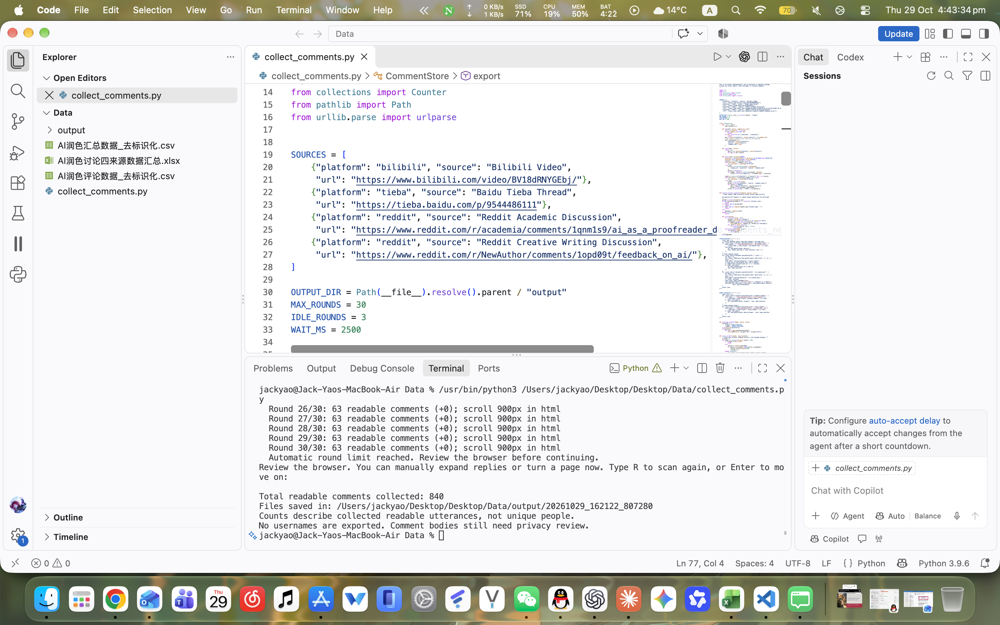
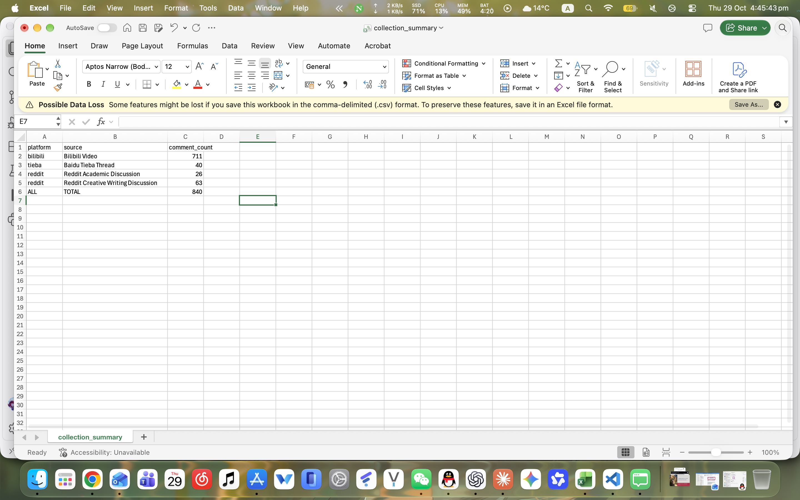
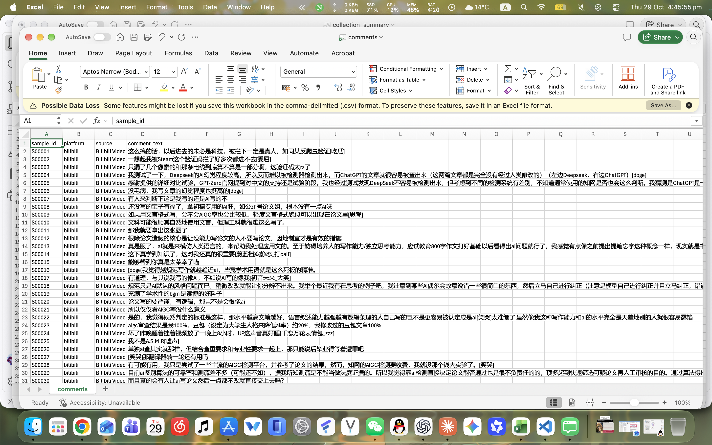

Week 4: Data Practices
In this week's group activity, I collected social media posts and comments about using AI to polish writing, to explore people's attitudes towards it. After doing this, I realised that collecting content was only the first step. I still needed to filter, organise and classify it to understand what it expressed.
At first, I spent a long time thinking about the categories. I kept feeling that the ones I had thought of were not comprehensive enough and might miss something. Discussing this with my group helped us find a clearer direction. I learned that instead of trying to create categories that cover everything from the start, we could begin with a general plan and adjust it as we looked at the material.
I wrote a web scraper to collect the content, but the results included promotional posts, off-topic replies and other material that had little to do with our question. I therefore needed to filter the results myself. I had expected the program to make things easier, but it mainly saved time on collecting the content. I still had to read and understand it to decide whether it was useful. Other group members might also see value in something I considered irrelevant, so we needed to try to apply consistent selection criteria.






When classifying the material, I found that some entries covered several themes and were difficult to put into just one category. We therefore allowed multiple categories for each entry. This reminded me of the discussion about rethinking classification in What Gets Counted Counts (D’Ignazio and Klein, 2020). If something does not fit into our categories, the categories themselves may need to change, rather than forcing the content to fit.
This activity also helped me understand the lecture's point that data is not neutral. What we collect, what we remove and how we classify it all affect the results we see. Previously, I paid more attention to how much data I had collected. Now I also think about how that data was produced and whether our approach leaves out different voices.